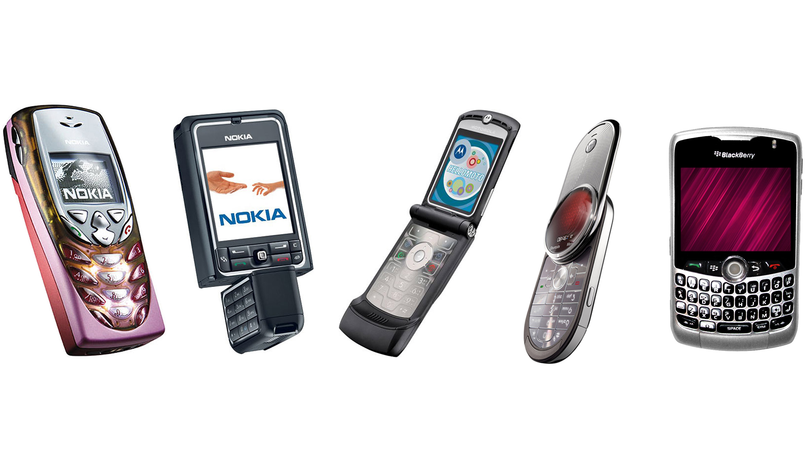
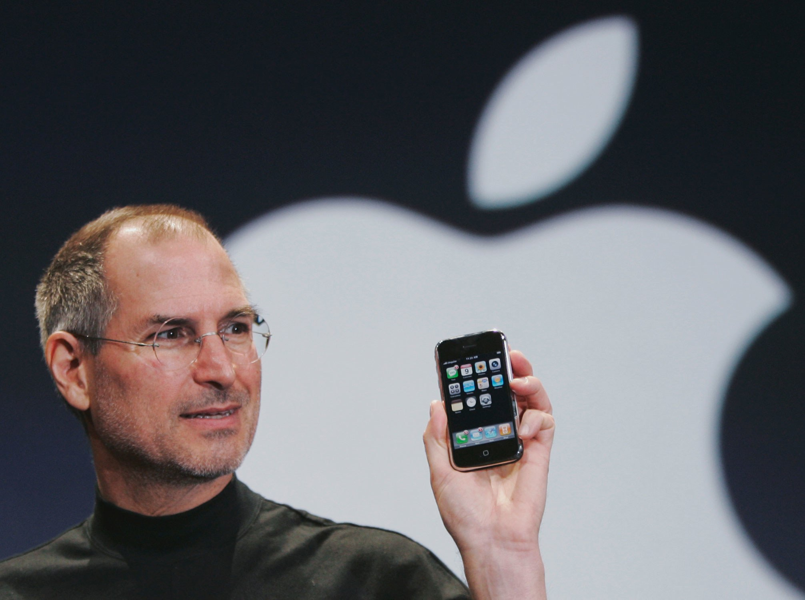
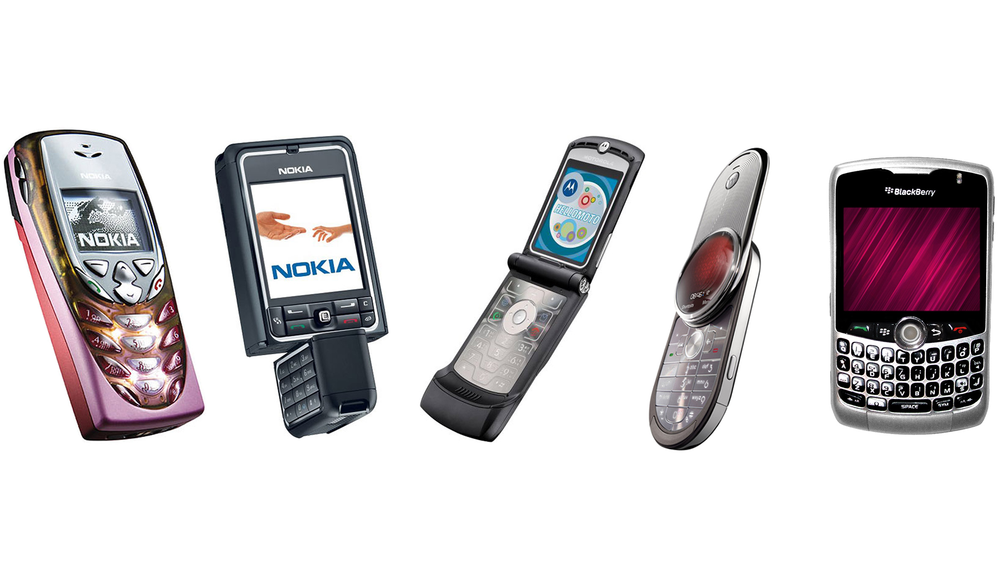
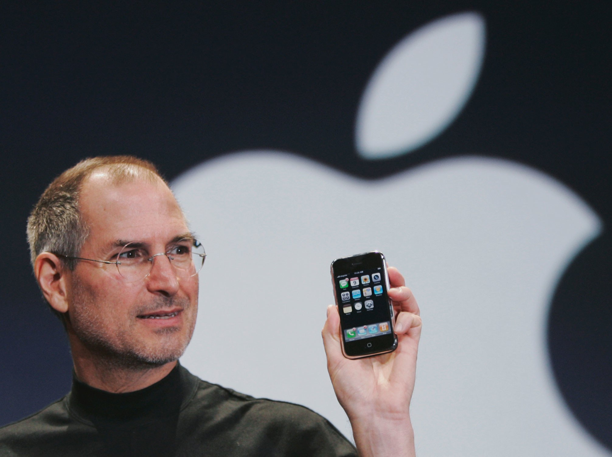
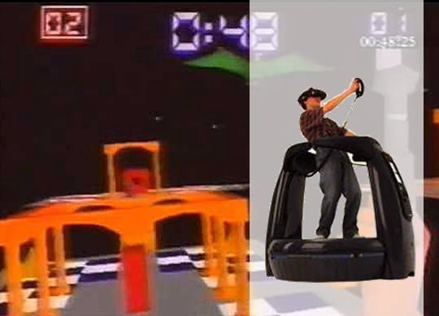
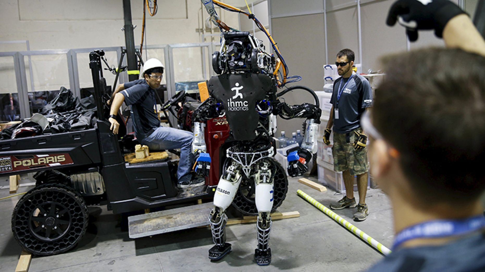

Hello!
Paul Shannon

- TalkScript Podcast
- Phoenix TypeScript
- Committer: Dojo, @types/aframe
- devpaul
A Step Into Virtual Reality
Virtual reality is having a moment
Virtual Reality
Fad
or
Future?
Domestication Theory
How does technology become domesticated?
3D TV

Mobile Phones
 



Virtual Reality



Demo Time
https://vr.devpaul.com
The Future
Telepresence
With Agency

VR is at a viable place
Right now is the time to be an early adopter